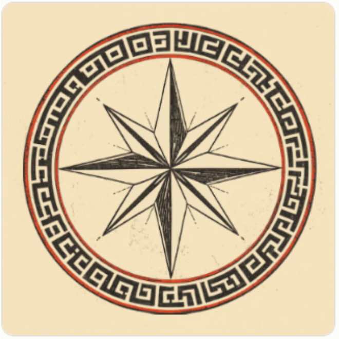

Steady course, every month.
The compass carries the brand up front — the sailboat mark shows up as a secondary watermark in sections like this one, or tucked into backgrounds.

Steady, dependable monthly bookkeeping for small businesses across Pennsylvania and Utah.
Book a callSee our servicesUp to 50 transactions/mo. Clean books, closed on time.
Up to 150 transactions/mo. Cash flow reporting included.
Full oversight, sales tax, and payroll coordination.
The compass carries the brand up front — the sailboat mark shows up as a secondary watermark in sections like this one, or tucked into backgrounds.